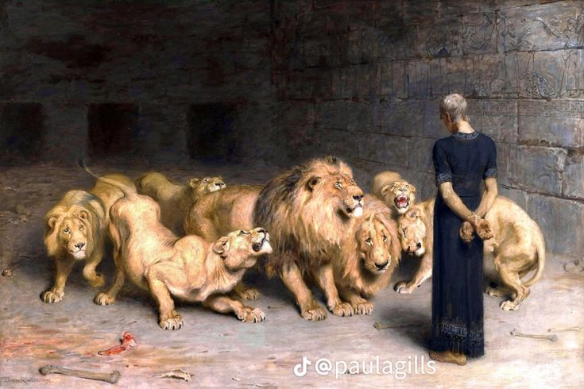
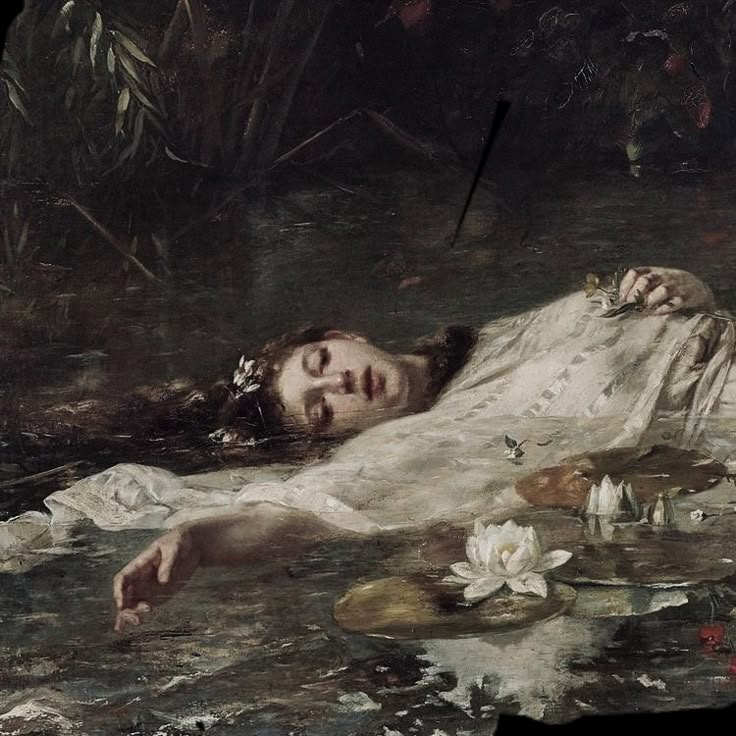

Na początku XIX wieku sztuka była mocno związana z klasycyzmem, który kontynuował ideały sztuki starożytnej Grecji i Rzymu. Jednak z biegiem czasu pojawił się romantyzm – kierunek artystyczny, który kładł duży nacisk na emocje, wyobraźnię i indywidualność. Artyści romantyczni, tacy jak Eugène Delacroix czy J.M.W. Turner, starali się oddać piękno natury, dramatyzm i subiektywność ludzkich przeżyć.
Eugène Delacroix – Jeden z najwybitniejszych przedstawicieli romantyzmu, który używał intensywnych kolorów, aby wyrazić emocje i dramatyczne sceny. Jego obraz „Wolność wiodąca lud na barykady” stał się symbolem rewolucji i walki o wolność.
J.M.W. Turner – Brytyjski malarz, który był mistrzem pejzaży. Jego obrazy pełne były światła, dramatyzmu i ruchu, takie jak „Ostatnia walka Temeraire”.